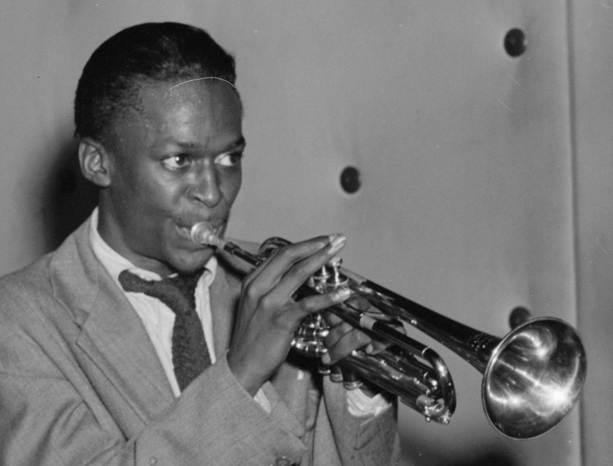

Don't play what's there, play what's not there.
Miles Davis through the years
- 1926 - Born Miles Dewey Davis III in Alton, Illinois
- 1935 - Received first trumpet from John Eubanks as a gift
- 1944 - Finished high school and moved to New York City and enrolled in the Institute of Musical Arts(Juilliard)
- 1945 - Dropped out of school to tour full time with multiple bands for the next few years
- 1948 - Started Miles Davis Nonet and recorded 12 twelve tracks that would later become 'Birth of Cool'
- 1953 - Returned home to recover from drug addiction
- 1954 - Returned to New York, recorded 'Walkin' 'Bags' Groove'
- 1955 - Formed 'first great quintet'
- 1956 - Recorded the rest of his contract for Prestige and his first major label recording with Columbia 'Round About Midnight'
- 1958 - Started a sextet and released 'Milestones' in the Modal Jazz style
- 1959 - Released 'Kind of Blue'
- 1960 - Released 'Sketches of Spain'
- 1964 - Formed 'second great quintet'
- 1965 - Released 'E. S. P.'
- 1967 - Released 'Miles Smiles'
- 1968 - The start of Miles' electric period with the release of 'Miles in the Sky'
- 1969 - Released 'In a Silent Way'
- 1970 - Released 'Bitches Brew'
- 1972 - 'On the Corner' was released
- 1981 - After a taking a break from music that started in 1975, the live album 'We Want Miles' was released
- 1985 - 'You're Under Arrest' was released and featured big name pop artists
- 1986 - Released 'Tutu'
- 1991 - Died on September 28 at the age of 65, one month after his last live performance at the Hollywood Bowl
- 1992 - 'Doo-Bop' was released